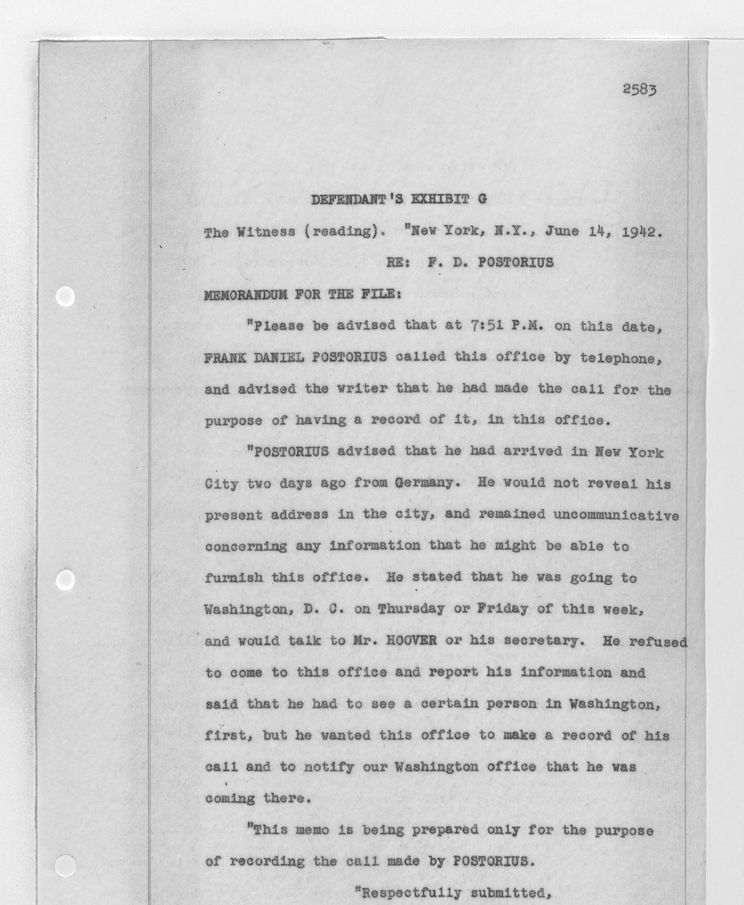

'This memo is being prepared only for the purpose of recording the call.' – FBI New York, 14 June 1942.
In June 1942 two German submarines put eight saboteurs ashore: four at Amagansett on Long Island, four at Ponte Vedra Beach in Florida. A Coast Guard patrolman met the first group in the fog; nobody saw the second. Two weeks later all eight were in custody, and the FBI told the country how it had caught them. The record tells it differently: one of the eight had telephoned the FBI himself, and the call had been filed without any action.
Three scenarios on the American side: the two nights on the beaches, the FBI's two weeks from the call to the last arrest in Chicago, and the six weeks of what the country was told. Nobody fights in this game; the commission's verdicts and the deaths of 8 August are the fixed record. At the end four versions stand side by side.
